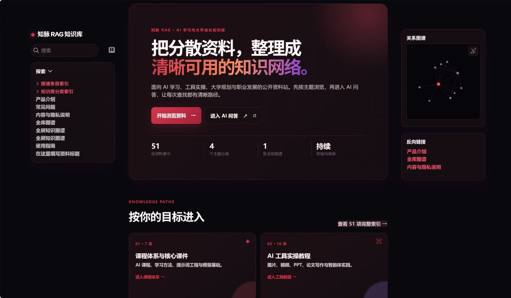
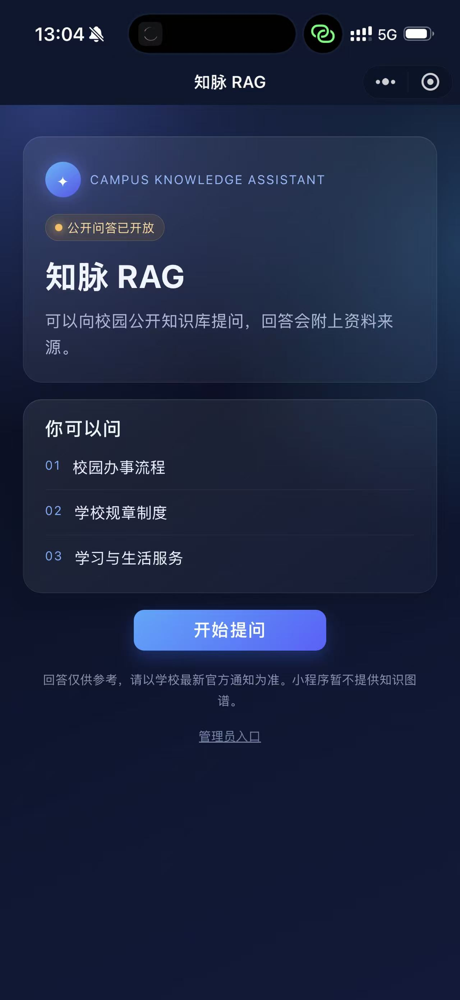
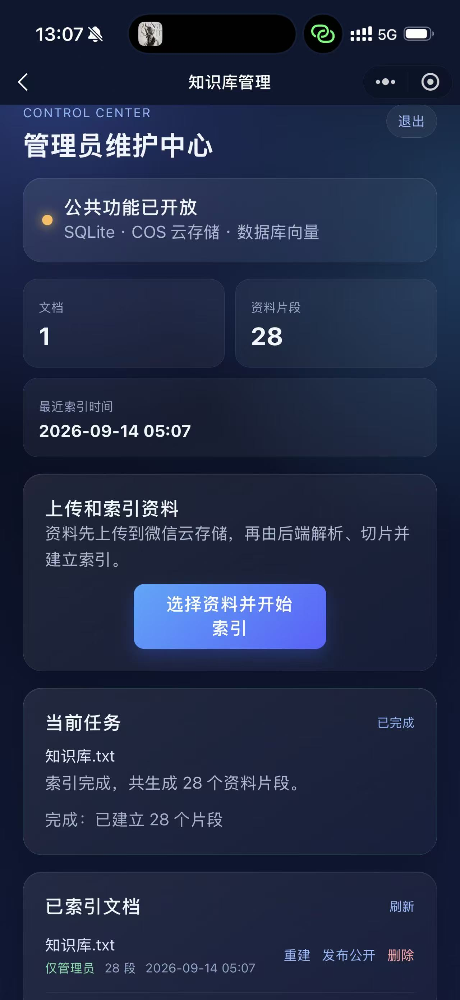
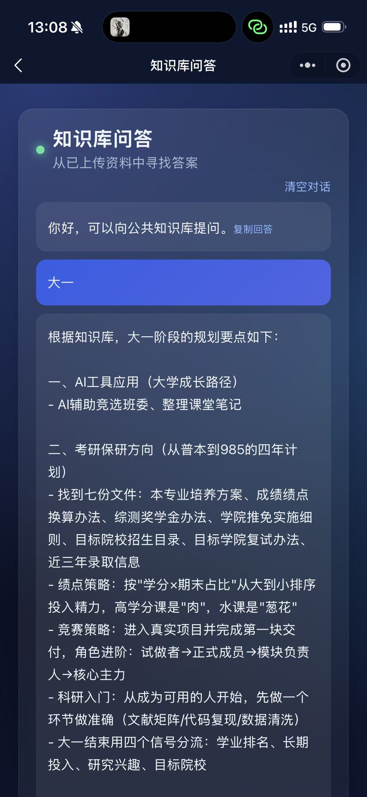
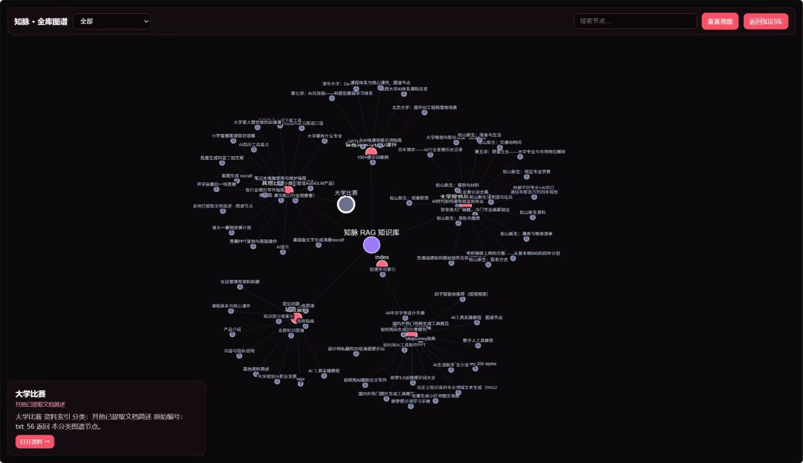

AI 辅助开发 · 资料管理与 RAG 问答实践
知脉·校园知识助手
校园资料分散，查找成本较高；新上传资料需要审核，不能直接进入公共问答。

PRODUCT SPACE项目背景
把校园公开资料、学习与生活信息整理成可检索的知识服务，让用户提问时能够看到资料来源。
历史界面记录




重点实现
在 AI 工具辅助下完成资料上传、解析切片、索引、审核发布与来源展示链路，将“建立索引”和“允许公共检索”分离。
验证方式与结果
通过小程序真机测试对比资料发布前后的检索范围；补充权限隔离测试，当前本地测试集共 11 项，全部通过，覆盖范围包括参数传递、角色权限分支与 SQL 构造。
11 项是本地测试集总数，不代表全部为新增的权限专项测试，也不等同于线上端到端安全验收。
技术与实现
公共问答入口在后端固定启用 public_only=True；检索层仅查询 visibility='public' 且 status='ready' 的片段，不依赖客户端传入的可见性参数决定公共检索范围。
当前边界
测试使用替身数据库与依赖覆盖；真实 JWT、真实数据库及当前线上环境尚需独立验收。来源引用便于追溯，不等于回答一定正确。
以上图片为历史界面记录，不证明当前服务持续在线。代码配置、历史部署记录与当前线上运行状态应分别核实。